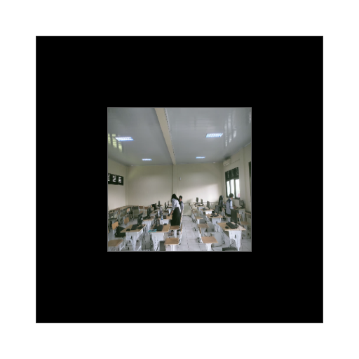

Marker Gedung Sekolah
Digunakan untuk menampilkan denah gedung utama

Marker Laboratorium Komputer
Menampilkan objek 3D ruang lab komputer

Marker Ruang Guru
Digunakan untuk visualisasi ruang guru
Arahkan kamera aplikasi ke marker berikut untuk menampilkan objek 3D
Digunakan untuk menampilkan denah gedung utama
Menampilkan objek 3D ruang lab komputer
Digunakan untuk visualisasi ruang guru